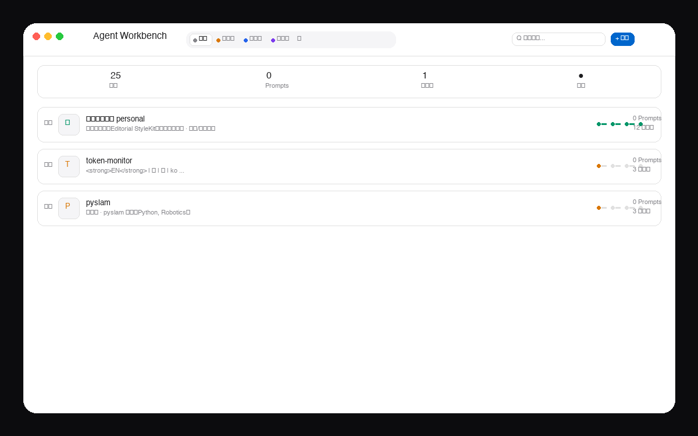

Agent Workbench
管理 AI Agent 项目和 Prompt 版本的个人工具。你的下一个 Agent，何必散落在文件夹里。· 三端桌面 App + 本地优先 + Cloudflare 自动同步 ·

三端 · Tauri 2.8 + SQLite WAL · 本地优先，同步可选。
告别在文件夹与 JSON 间反复切换。项目、Prompt 版本、阶段流转，都在一个安静的地方。
不止保存，是演进。每个 Prompt 都有版本历史、当前标注、diff 对比与一键回滚。你的“灵感迭代”，终于可追溯。
构思中 → 开发中 → 测试中 → 已上线。阶段条用专属色彩，卡片 gauge 同步着色，进度一目了然。
无网络也能用。SQLite WAL 原子写入，断电不丢；联网后自动补推。
⋮⋮ 把手拖动，随心排序。sort_index 持久化，6 字段搜索高亮。
填一组 Worker 地址 + 密钥，三端自动拉推。未填时就是纯本地工具。
Axum 动态端口，回显起步，健康检查与热切换。localhost 即可用。
12–17 设计落地：64 高顶栏、16 外边距、无 Bento 盒套盒、行式列表、大量留白。标题极大、正文极小，反差就是层级。
构思中 · #d97706 开发中 · #2563eb 测试中 已上线
查看 GitHub ›不再为每个 Agent 建一个文件夹、写一个 README。把它们放进 Workbench，像管理作品集一样管理你的探索。
干净的架构，才有安静的体验。
readCache → render → 异步 pull。60s/focus 自动拉取，500ms 防抖推。断网正常用。
覆盖前自动 safetyBackup，对标 CC backupRetainCount。路径 app_config_dir/backups/。
Agent Workbench — 你的 Agent 工作台。
私密仓库 · 按需公开。截图为应用内真实界面。